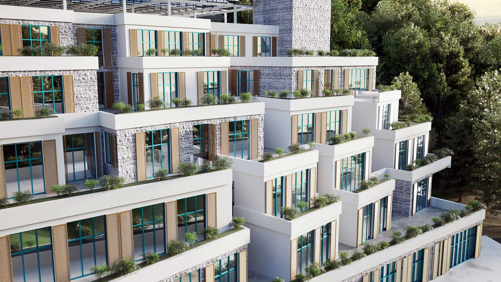
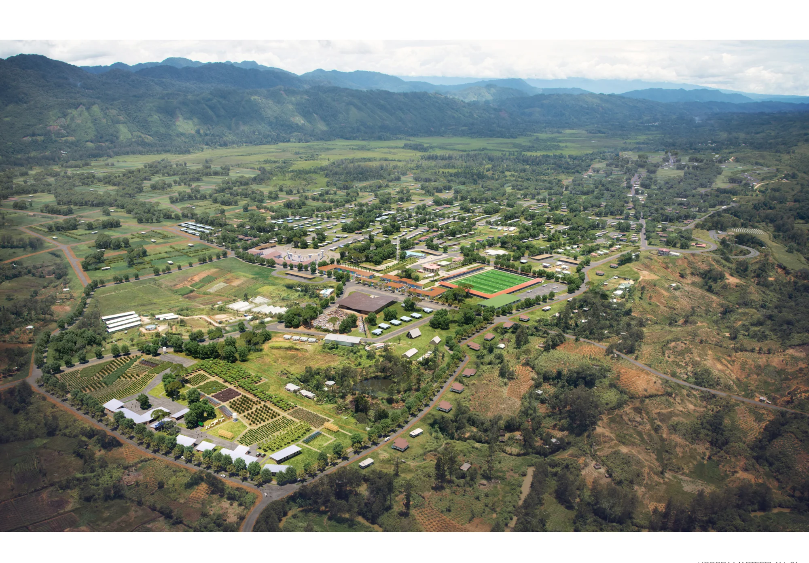
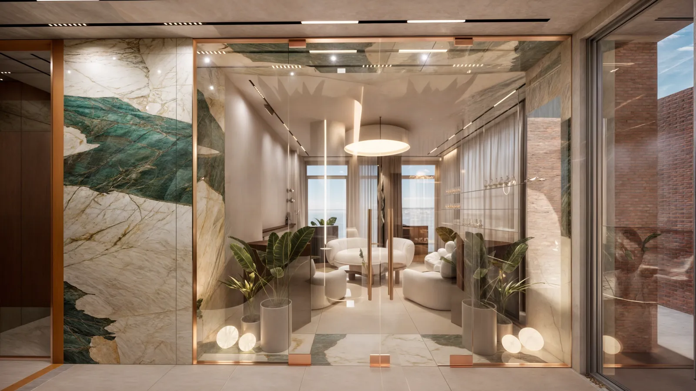
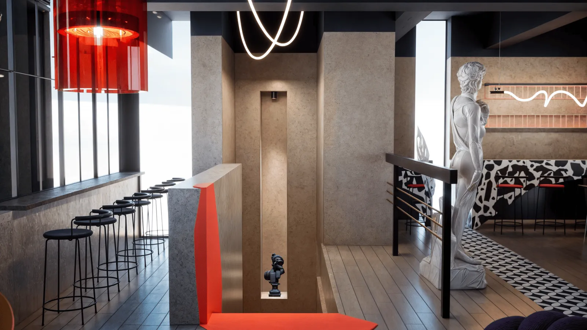
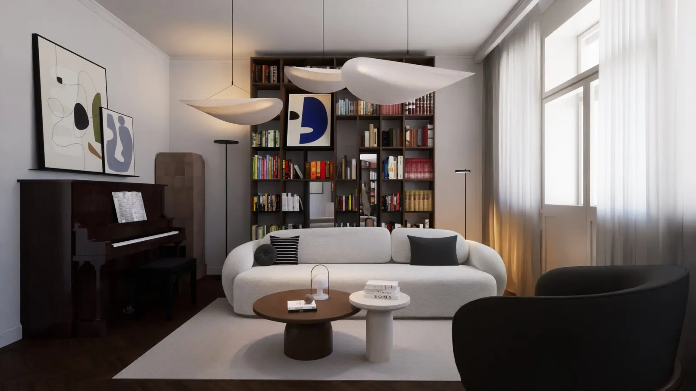

Izbor od 150+ projekata / prikazano 14
Izabrani radovi
Kuće, stanovi, klinike i ugostiteljski prostori u Srbiji i Crnoj Gori: izvedeni, u izgradnji i u pripremi. Status svakog projekta piše na njegovoj stranici.
Nijedan projekat ne odgovara pretrazi.

Centar za događaje i restoran

Stanovanje, vile

Stanovanje, vile

Stambeno-poslovni objekat

Enterijer kafea

Master plan varoši

Stanovanje, kuća

Enterijer stana

Enterijer zdravstvene ustanove

Ugostiteljski enterijer

Enterijer stana

Enterijer stana

Enterijer stana

Enterijer stana
01Event Center, TrnavaIdejno rešenje i koncept +4202602Villa Dve Koraćica, KosmajIdejno rešenje i koncept +2202603Villa Duo, DivčibareIdejno rešenje i koncept +4202504Liman 2, UlcinjIdejno rešenje i koncept +2201905Cafe, Frankfurt am MainEnterijer i detalji po meri +1202406Koroba Restoration MasterplanIdejno rešenje i koncept +2201807Private Villa BC 3721Idejno rešenje i koncept +3202408Apartment PB/23 MBIdejno rešenje i koncept +4202409Clinic ZTBRazrada projekta i 3D modelovanje +3202410Caffe Spass, BelgradeIdejno rešenje i koncept +4202411Apartment Sakura 2/24Razrada projekta i 3D modelovanje +3202312Apartment Sakura 1/24Razrada projekta i 3D modelovanje +3202313Belgrade Waterfront Apartment 2/B/64Idejno rešenje i koncept +3202414Apartment KM 4/18Tehnička dokumentacija i inženjering +22024